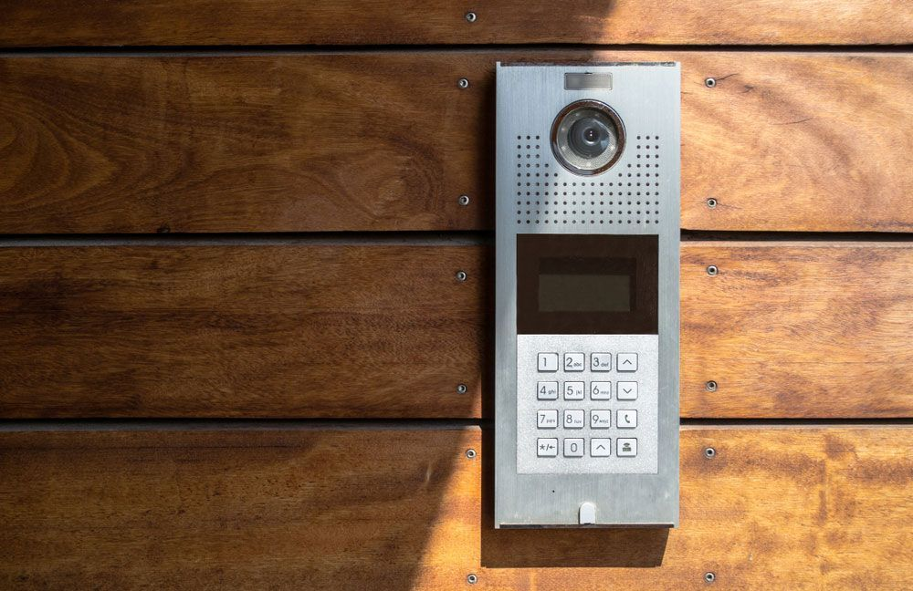
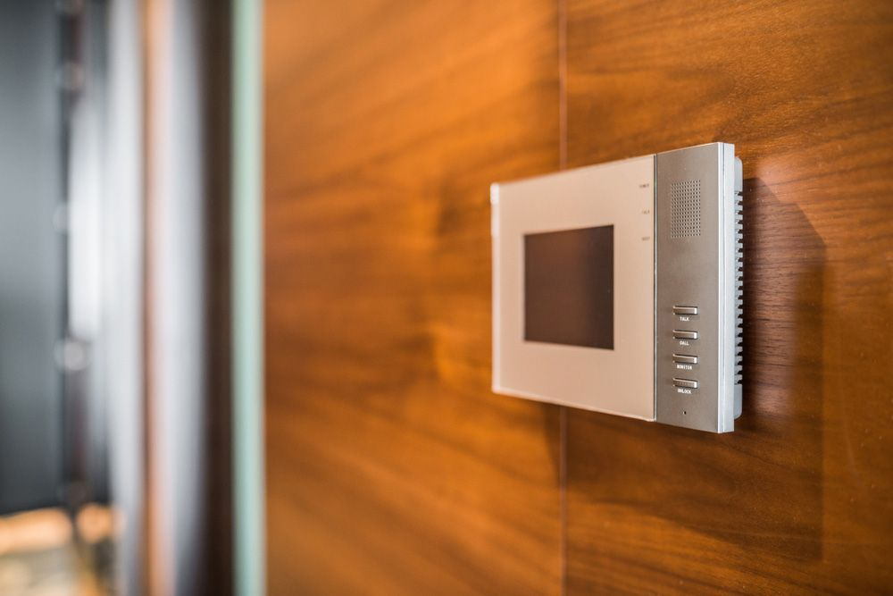
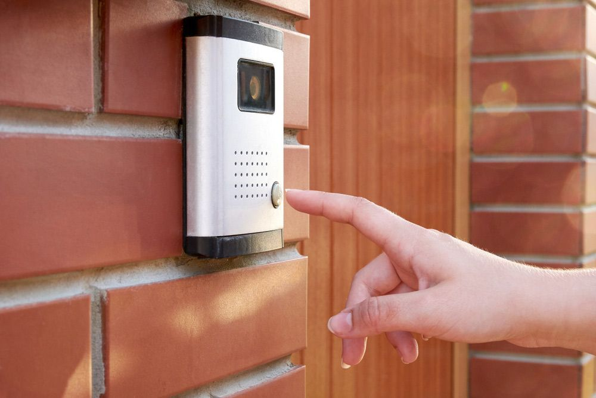

On this page
AT A GLANCE
Intercom systems serve as an essential component in modern security by allowing voice communication between different areas of a property, contributing to both convenience and safety.

Modernised Security With Intercom Systems
Intercom systems serve as an essential component in modern security by allowing voice communication between different areas of a property, contributing to both convenience and safety. They come in various forms from simple audio only versions to advanced video intercoms with integrated access controls. Whether it’s a residential setting requiring a gate intercom for filtering visitors or a corporate environment seeking to manage access across multiple checkpoints, intercom systems provide an effective solution for real time communication and controlled entry.
At SPL Security Solutions, we pride ourselves on offering a spectrum of intercom products to meet the diverse requirements of our clients. With features like remote access, integration with mobile devices and seamless operation, our intercom systems ensure you always stay connected to your home or business, no matter where you are. We also repair and maintain all makes of intercom systems including video entry and access control systems for local councils, body corporates, businesses and homes.
Get an obligation-free quote for a new intercom system today on (07) 5588 8111. We also supply CCTV and security cameras, alarms and access control systems throughout the Gold Coast, Brisbane and Northern NSW.
Home Intercom Systems
Intercom systems are an excellent addition to home security, providing residents with the ability to communicate with people at their property boundary, fence line or gate. This functionality is especially beneficial for elderly or disabled individuals who may have difficulty getting up and down frequently throughout the day. They also allow homeowners greater control over who enters their property, safeguarding against uninvited visitors or solicitors.
With the ability to remotely release gates or doors, homeowners can easily grant entry to expected guests without having to leave their current location. This can be useful for deliveries or tradespeople who need access while the homeowner may be busy elsewhere.

City skyline

Intercom Systems for Businesses
Intercom systems are an effective way for businesses to manage access and communication throughout a property. They provide convenience and security by allowing seamless communication and facilitating controlled entry for visitors and personnel. Additionally, intercom systems can be integrated with other security measures to enhance overall safety protocols.
Our intercom solutions for businesses include advanced video intercoms with integrated access control features such as key fob or card entry. These systems can also be programmed with different levels of access for employees and visitors, ensuring only authorised individuals are granted entry to specific areas of the property.
At SPL Security Solutions, we understand each business has unique security needs. Our team will work closely with you to design a customised intercom system that meets your specific requirements and budget.
ABB AUDIO HANDS-FREE INTERCOM QUICK OPERATION GUIDE
AIPHONE DB QUICK GUIDE & MANUAL
Service Areas
Gold Coast
Northern NSW